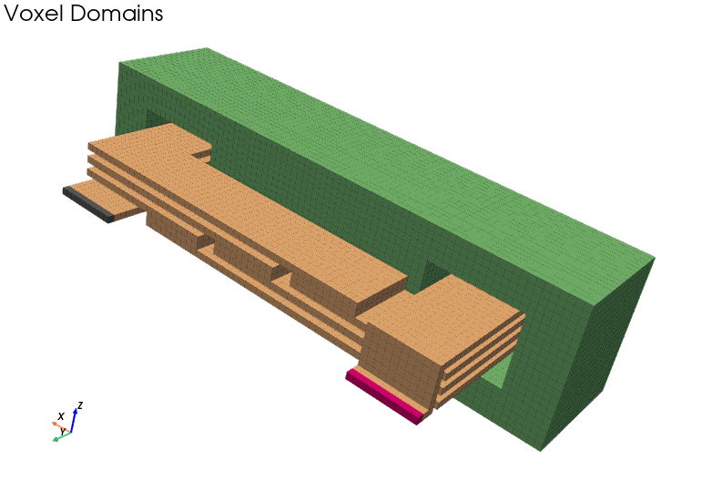
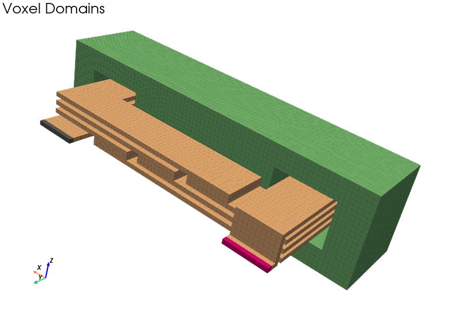

╔═══════════════════════════════════════════════════════╗
║ ╔═══╗ ╔═══╦═══╦═══╦═══╗ 3D PEEC Solver ║
║ ║╔═╗║ ║╔═╗║╔══╣╔══╣╔═╗║ Quasi-Magnetostatics ║
║ ║╚═╝╠╗ ╔╣╚═╝║╚══╣╚══╣║ ╚╝ Frequency Domain ║
║ ║╔══╣║ ║║╔══╣╔══╣╔══╣║ ╔╗ Voxel Geometries ║
║ ║║ ║╚═╝║║ ║╚══╣╚══╣╚═╝║ FFT/GPU Accelerated ║
║ ╚╝ ╚═╗ ╠╝ ╚═══╩═══╩═══╝ Python and Open Source ║
╚══════╦═╝ ╠════════════════════════════════════════════╝
╚═══╝
╔═══════════════════════════════════════════════════════╗
║ Website - https://pypeec.otvam.ch ║
║ Thomas Guillod - Dartmouth College ║
║ Mozilla Public License Version 2.0 ║
╚═══════════════════════════════════════════════════════╝
00:00:00.00 : MAIN : INFO : load the input data
00:00:00.01 : MAIN : INFO : load the solver
00:00:00.08 : MAIN : INFO : run the solver
00:00:00.08 : SOLVER : INFO : check the input data
00:00:00.08 : SOLVER : INFO : combine the input data
00:00:00.08 : SOLVER : INFO : init : enter : timing
00:00:00.08 : SOLVER : INFO : voxel_geometry : enter : timing
00:00:00.08 : SOLVER : INFO : voxel_geometry : exit : 00:00:00.00
00:00:00.08 : SOLVER : INFO : system_tensor : enter : timing
00:00:00.08 : GREEN : DEBUG : analytical solution: 6D / 1
00:00:00.09 : GREEN : DEBUG : analytical solution: 6D / 175
00:00:00.09 : GREEN : DEBUG : analytical solution: 5D / 175
00:00:00.10 : GREEN : DEBUG : analytical solution: 5D / 175
00:00:00.10 : GREEN : DEBUG : analytical solution: 5D / 175
00:00:00.11 : GREEN : DEBUG : analytical solution: 5D / 175
00:00:00.11 : GREEN : DEBUG : analytical solution: 5D / 175
00:00:00.12 : GREEN : DEBUG : analytical solution: 5D / 175
00:00:00.12 : SOLVER : INFO : system_tensor : exit : 00:00:00.03
00:00:00.12 : SOLVER : INFO : problem_geometry : enter : timing
00:00:00.13 : PROBLEM : DEBUG : n_voxel_total = 175
00:00:00.13 : PROBLEM : DEBUG : n_voxel_used = 55
00:00:00.13 : PROBLEM : DEBUG : n_face_total = 525
00:00:00.13 : PROBLEM : DEBUG : n_face_used = 86
00:00:00.13 : PROBLEM : DEBUG : n_voxel_electric = 7
00:00:00.13 : PROBLEM : DEBUG : n_voxel_magnetic = 48
00:00:00.13 : PROBLEM : DEBUG : n_face_electric = 6
00:00:00.13 : PROBLEM : DEBUG : n_face_magnetic = 80
00:00:00.13 : PROBLEM : DEBUG : n_src_current = 1
00:00:00.13 : PROBLEM : DEBUG : n_src_voltage = 1
00:00:00.13 : PROBLEM : DEBUG : ratio_voxel = 3.14e-01
00:00:00.13 : PROBLEM : DEBUG : ratio_face = 1.64e-01
00:00:00.13 : SOLVER : INFO : problem_geometry : exit : 00:00:00.00
00:00:00.13 : SOLVER : INFO : system_matrix : enter : timing
00:00:00.13 : FFT : DEBUG : multiplication: inductance
00:00:00.13 : FFT : DEBUG : tensor size: (5, 5, 7)
00:00:00.13 : FFT : DEBUG : tensor footprint: 0.02 MB
00:00:00.13 : FFT : DEBUG : library: SciPy / GPU: False
00:00:00.13 : FFT : DEBUG : multiplication: potential
00:00:00.13 : FFT : DEBUG : tensor size: (5, 5, 7)
00:00:00.13 : FFT : DEBUG : tensor footprint: 0.02 MB
00:00:00.13 : FFT : DEBUG : library: SciPy / GPU: False
00:00:00.13 : FFT : DEBUG : multiplication: coupling
00:00:00.13 : FFT : DEBUG : tensor size: (5, 5, 7)
00:00:00.13 : FFT : DEBUG : tensor footprint: 0.06 MB
00:00:00.13 : FFT : DEBUG : library: SciPy / GPU: False
00:00:00.14 : SOLVER : INFO : system_matrix : exit : 00:00:00.00
00:00:00.14 : SOLVER : INFO : init : exit : 00:00:00.05
00:00:00.14 : SOLVER : INFO : run sweep: sim_dc : enter : timing
00:00:00.14 : SOLVER : INFO : problem_value : enter : timing
00:00:00.14 : SOLVER : INFO : problem_value : exit : 00:00:00.00
00:00:00.14 : SOLVER : INFO : equation_system : enter : timing
00:00:00.14 : FACTOR : DEBUG : factorization: electric
00:00:00.14 : FACTOR : DEBUG : matrix size: (9, 9)
00:00:00.14 : FACTOR : DEBUG : matrix elements: 25
00:00:00.14 : FACTOR : DEBUG : matrix density: 3.09e-01
00:00:00.14 : FACTOR : DEBUG : library: SuperLU
00:00:00.14 : FACTOR : DEBUG : compute factorization
00:00:00.15 : FACTOR : DEBUG : factorization success
00:00:00.15 : FACTOR : DEBUG : factorization: magnetic
00:00:00.15 : FACTOR : DEBUG : matrix size: (48, 48)
00:00:00.15 : FACTOR : DEBUG : matrix elements: 208
00:00:00.15 : FACTOR : DEBUG : matrix density: 9.03e-02
00:00:00.15 : FACTOR : DEBUG : library: SuperLU
00:00:00.15 : FACTOR : DEBUG : compute factorization
00:00:00.15 : FACTOR : DEBUG : factorization success
00:00:00.15 : SOLVER : INFO : equation_system : exit : 00:00:00.00
00:00:00.15 : SOLVER : INFO : equation_solver : enter : timing
00:00:00.15 : COND : DEBUG : condition: electric
00:00:00.15 : COND : DEBUG : matrix size: (9, 9)
00:00:00.15 : COND : DEBUG : matrix elements: 25
00:00:00.15 : COND : DEBUG : matrix density: 3.09e-01
00:00:00.15 : COND : DEBUG : compute LU decomposition
00:00:00.15 : COND : DEBUG : estimate norm of the inverse
00:00:00.15 : COND : DEBUG : estimate norm of the matrix
00:00:00.15 : COND : DEBUG : compute condition estimate
00:00:00.15 : COND : DEBUG : condition: magnetic
00:00:00.15 : COND : DEBUG : matrix size: (48, 48)
00:00:00.15 : COND : DEBUG : matrix elements: 208
00:00:00.15 : COND : DEBUG : matrix density: 9.03e-02
00:00:00.15 : COND : DEBUG : compute LU decomposition
00:00:00.15 : COND : DEBUG : estimate norm of the inverse
00:00:00.15 : COND : DEBUG : estimate norm of the matrix
00:00:00.15 : COND : DEBUG : compute condition estimate
00:00:00.15 : EQUATION : DEBUG : condition summary
00:00:00.15 : EQUATION : DEBUG : check = True
00:00:00.15 : EQUATION : DEBUG : status = True
00:00:00.15 : EQUATION : DEBUG : value_electric = 3.20e+07
00:00:00.15 : EQUATION : DEBUG : value_magnetic = 1.36e+02
00:00:00.15 : EQUATION : DEBUG : matrix condition is good
00:00:00.15 : ITER : DEBUG : matrix solver
00:00:00.15 : ITER : DEBUG : init solver
00:00:00.15 : ITER : DEBUG : solver: GMRES
00:00:00.15 : ITER : DEBUG : n_dof: 143
00:00:00.15 : ITER : DEBUG : call solver
00:00:00.16 : ITER : DEBUG : i = 1 / 0.00e+00+0.00e+00j VA
00:00:00.17 : ITER : DEBUG : i = 2 / 1.50e-06-1.25e-12j VA
00:00:00.18 : ITER : DEBUG : i = 3 / 1.50e-06-8.39e-21j VA
00:00:00.18 : EQUATION : DEBUG : solver summary
00:00:00.18 : EQUATION : DEBUG : n_dof = 143
00:00:00.18 : EQUATION : DEBUG : n_iter = 3
00:00:00.19 : EQUATION : DEBUG : n_sys_eval = 8
00:00:00.19 : EQUATION : DEBUG : n_pcd_eval = 9
00:00:00.19 : EQUATION : DEBUG : res_rms = 1.02e-11
00:00:00.19 : EQUATION : DEBUG : check = True
00:00:00.19 : EQUATION : DEBUG : status_pcd = True
00:00:00.19 : EQUATION : DEBUG : status_solver = True
00:00:00.19 : EQUATION : DEBUG : status_res = True
00:00:00.19 : EQUATION : DEBUG : convergence achieved
00:00:00.19 : SOLVER : INFO : equation_solver : exit : 00:00:00.03
00:00:00.19 : SOLVER : INFO : extract_solution : enter : timing
00:00:00.19 : SOLUTION : DEBUG : domain: terminal
00:00:00.19 : SOLUTION : DEBUG : P_electric = 2.50e-07 W
00:00:00.19 : SOLUTION : DEBUG : P_magnetic = 0.00e+00 W
00:00:00.19 : SOLUTION : DEBUG : P_tot = 2.50e-07 W
00:00:00.19 : SOLUTION : DEBUG : domain: cond
00:00:00.19 : SOLUTION : DEBUG : P_electric = 1.25e-06 W
00:00:00.19 : SOLUTION : DEBUG : P_magnetic = 0.00e+00 W
00:00:00.19 : SOLUTION : DEBUG : P_tot = 1.25e-06 W
00:00:00.19 : SOLUTION : DEBUG : domain: core
00:00:00.19 : SOLUTION : DEBUG : P_electric = 0.00e+00 W
00:00:00.19 : SOLUTION : DEBUG : P_magnetic = 0.00e+00 W
00:00:00.19 : SOLUTION : DEBUG : P_tot = 0.00e+00 W
00:00:00.19 : SOLUTION : DEBUG : domain: empty
00:00:00.19 : SOLUTION : DEBUG : P_electric = 0.00e+00 W
00:00:00.19 : SOLUTION : DEBUG : P_magnetic = 0.00e+00 W
00:00:00.19 : SOLUTION : DEBUG : P_tot = 0.00e+00 W
00:00:00.19 : SOLUTION : DEBUG : terminal: src
00:00:00.19 : SOLUTION : DEBUG : V = +1.00e+00 + -2.44e-21j V
00:00:00.19 : SOLUTION : DEBUG : I = +5.00e-01 + +7.18e-21j A
00:00:00.19 : SOLUTION : DEBUG : S = +5.00e-01 + -8.39e-21j VA
00:00:00.19 : SOLUTION : DEBUG : terminal: sink
00:00:00.19 : SOLUTION : DEBUG : V = +1.00e+00 + -2.44e-21j V
00:00:00.19 : SOLUTION : DEBUG : I = -5.00e-01 + +1.22e-21j A
00:00:00.19 : SOLUTION : DEBUG : S = -5.00e-01 + +0.00e+00j VA
00:00:00.19 : SOLUTION : DEBUG : terminal: empty
00:00:00.19 : SOLUTION : DEBUG : V = +0.00e+00 + +0.00e+00j V
00:00:00.19 : SOLUTION : DEBUG : I = +0.00e+00 + +0.00e+00j A
00:00:00.19 : SOLUTION : DEBUG : S = +0.00e+00 + +0.00e+00j VA
00:00:00.19 : SOLUTION : DEBUG : integral
00:00:00.20 : SOLUTION : DEBUG : S_tot_real = 1.50e-06 VA
00:00:00.20 : SOLUTION : DEBUG : S_tot_imag = 1.50e-06j VA
00:00:00.20 : SOLUTION : DEBUG : P_electric = 1.50e-06 W
00:00:00.20 : SOLUTION : DEBUG : P_magnetic = 0.00e+00 W
00:00:00.20 : SOLUTION : DEBUG : W_electric = 3.56e-09 J
00:00:00.20 : SOLUTION : DEBUG : W_magnetic = 1.72e-08 J
00:00:00.20 : SOLUTION : DEBUG : P_tot = 1.50e-06 W
00:00:00.20 : SOLUTION : DEBUG : W_tot = 2.07e-08 J
00:00:00.20 : SOLVER : INFO : extract_solution : exit : 00:00:00.00
00:00:00.20 : SOLVER : INFO : run sweep: sim_dc : exit : 00:00:00.06
00:00:00.20 : SOLVER : INFO : run sweep: sim_ac : enter : timing
00:00:00.20 : SOLVER : INFO : problem_value : enter : timing
00:00:00.20 : SOLVER : INFO : problem_value : exit : 00:00:00.00
00:00:00.20 : SOLVER : INFO : equation_system : enter : timing
00:00:00.20 : FACTOR : DEBUG : factorization: electric
00:00:00.20 : FACTOR : DEBUG : matrix size: (9, 9)
00:00:00.20 : FACTOR : DEBUG : matrix elements: 25
00:00:00.20 : FACTOR : DEBUG : matrix density: 3.09e-01
00:00:00.20 : FACTOR : DEBUG : library: SuperLU
00:00:00.20 : FACTOR : DEBUG : compute factorization
00:00:00.20 : FACTOR : DEBUG : factorization success
00:00:00.20 : FACTOR : DEBUG : factorization: magnetic
00:00:00.20 : FACTOR : DEBUG : matrix size: (48, 48)
00:00:00.20 : FACTOR : DEBUG : matrix elements: 208
00:00:00.20 : FACTOR : DEBUG : matrix density: 9.03e-02
00:00:00.20 : FACTOR : DEBUG : library: SuperLU
00:00:00.20 : FACTOR : DEBUG : compute factorization
00:00:00.20 : FACTOR : DEBUG : factorization success
00:00:00.20 : SOLVER : INFO : equation_system : exit : 00:00:00.00
00:00:00.20 : SOLVER : INFO : equation_solver : enter : timing
00:00:00.20 : COND : DEBUG : condition: electric
00:00:00.20 : COND : DEBUG : matrix size: (9, 9)
00:00:00.20 : COND : DEBUG : matrix elements: 25
00:00:00.20 : COND : DEBUG : matrix density: 3.09e-01
00:00:00.20 : COND : DEBUG : compute LU decomposition
00:00:00.20 : COND : DEBUG : estimate norm of the inverse
00:00:00.21 : COND : DEBUG : estimate norm of the matrix
00:00:00.21 : COND : DEBUG : compute condition estimate
00:00:00.21 : COND : DEBUG : condition: magnetic
00:00:00.21 : COND : DEBUG : matrix size: (48, 48)
00:00:00.21 : COND : DEBUG : matrix elements: 208
00:00:00.21 : COND : DEBUG : matrix density: 9.03e-02
00:00:00.21 : COND : DEBUG : compute LU decomposition
00:00:00.21 : COND : DEBUG : estimate norm of the inverse
00:00:00.21 : COND : DEBUG : estimate norm of the matrix
00:00:00.21 : COND : DEBUG : compute condition estimate
00:00:00.21 : EQUATION : DEBUG : condition summary
00:00:00.21 : EQUATION : DEBUG : check = True
00:00:00.21 : EQUATION : DEBUG : status = True
00:00:00.21 : EQUATION : DEBUG : value_electric = 2.70e+06
00:00:00.21 : EQUATION : DEBUG : value_magnetic = 1.36e+02
00:00:00.21 : EQUATION : DEBUG : matrix condition is good
00:00:00.21 : ITER : DEBUG : matrix solver
00:00:00.21 : ITER : DEBUG : init solver
00:00:00.21 : ITER : DEBUG : solver: GMRES
00:00:00.21 : ITER : DEBUG : n_dof: 143
00:00:00.21 : ITER : DEBUG : call solver
00:00:00.22 : ITER : DEBUG : i = 1 / 7.50e-07-4.20e-21j VA
00:00:00.27 : ITER : DEBUG : i = 2 / 5.45e-05+1.30e-04j VA
00:00:00.33 : ITER : DEBUG : i = 3 / 5.45e-05+1.30e-04j VA
00:00:00.33 : EQUATION : DEBUG : solver summary
00:00:00.33 : EQUATION : DEBUG : n_dof = 143
00:00:00.33 : EQUATION : DEBUG : n_iter = 3
00:00:00.33 : EQUATION : DEBUG : n_sys_eval = 10
00:00:00.33 : EQUATION : DEBUG : n_pcd_eval = 10
00:00:00.33 : EQUATION : DEBUG : res_rms = 5.28e-08
00:00:00.33 : EQUATION : DEBUG : check = True
00:00:00.33 : EQUATION : DEBUG : status_pcd = True
00:00:00.33 : EQUATION : DEBUG : status_solver = True
00:00:00.33 : EQUATION : DEBUG : status_res = True
00:00:00.33 : EQUATION : DEBUG : convergence achieved
00:00:00.33 : SOLVER : INFO : equation_solver : exit : 00:00:00.13
00:00:00.33 : SOLVER : INFO : extract_solution : enter : timing
00:00:00.34 : SOLUTION : DEBUG : domain: terminal
00:00:00.34 : SOLUTION : DEBUG : P_electric = 1.25e-07 W
00:00:00.34 : SOLUTION : DEBUG : P_magnetic = 0.00e+00 W
00:00:00.34 : SOLUTION : DEBUG : P_tot = 1.25e-07 W
00:00:00.34 : SOLUTION : DEBUG : domain: cond
00:00:00.34 : SOLUTION : DEBUG : P_electric = 6.25e-07 W
00:00:00.34 : SOLUTION : DEBUG : P_magnetic = 0.00e+00 W
00:00:00.34 : SOLUTION : DEBUG : P_tot = 6.25e-07 W
00:00:00.34 : SOLUTION : DEBUG : domain: core
00:00:00.34 : SOLUTION : DEBUG : P_electric = 0.00e+00 W
00:00:00.34 : SOLUTION : DEBUG : P_magnetic = 5.38e-05 W
00:00:00.34 : SOLUTION : DEBUG : P_tot = 5.38e-05 W
00:00:00.34 : SOLUTION : DEBUG : domain: empty
00:00:00.34 : SOLUTION : DEBUG : P_electric = 0.00e+00 W
00:00:00.34 : SOLUTION : DEBUG : P_magnetic = 0.00e+00 W
00:00:00.34 : SOLUTION : DEBUG : P_tot = 0.00e+00 W
00:00:00.34 : SOLUTION : DEBUG : terminal: src
00:00:00.34 : SOLUTION : DEBUG : V = +1.00e+00 + +2.60e-04j V
00:00:00.34 : SOLUTION : DEBUG : I = +5.00e-01 + -1.30e-04j A
00:00:00.34 : SOLUTION : DEBUG : S = +2.50e-01 + +1.30e-04j VA
00:00:00.34 : SOLUTION : DEBUG : terminal: sink
00:00:00.34 : SOLUTION : DEBUG : V = +1.00e+00 + -2.60e-04j V
00:00:00.34 : SOLUTION : DEBUG : I = -5.00e-01 + +1.30e-04j A
00:00:00.34 : SOLUTION : DEBUG : S = -2.50e-01 + +0.00e+00j VA
00:00:00.34 : SOLUTION : DEBUG : terminal: empty
00:00:00.34 : SOLUTION : DEBUG : V = +0.00e+00 + +0.00e+00j V
00:00:00.34 : SOLUTION : DEBUG : I = +0.00e+00 + +0.00e+00j A
00:00:00.34 : SOLUTION : DEBUG : S = +0.00e+00 + +0.00e+00j VA
00:00:00.34 : SOLUTION : DEBUG : integral
00:00:00.34 : SOLUTION : DEBUG : S_tot_real = 5.45e-05 VA
00:00:00.34 : SOLUTION : DEBUG : S_tot_imag = 5.45e-05j VA
00:00:00.34 : SOLUTION : DEBUG : P_electric = 7.50e-07 W
00:00:00.34 : SOLUTION : DEBUG : P_magnetic = 5.38e-05 W
00:00:00.34 : SOLUTION : DEBUG : W_electric = 1.78e-09 J
00:00:00.34 : SOLUTION : DEBUG : W_magnetic = 8.57e-09 J
00:00:00.34 : SOLUTION : DEBUG : P_tot = 5.45e-05 W
00:00:00.34 : SOLUTION : DEBUG : W_tot = 1.04e-08 J
00:00:00.34 : SOLVER : INFO : extract_solution : exit : 00:00:00.01
00:00:00.34 : SOLVER : INFO : run sweep: sim_ac : exit : 00:00:00.14
00:00:00.34 : SOLVER : INFO : duration: 00:00:00.26
00:00:00.34 : SOLVER : INFO : successful termination
00:00:00.34 : MAIN : INFO : save the results
 
